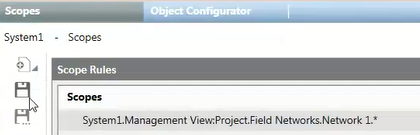

Configure the Scopes for OPC Connectivity
To configure Desigo CC for OPC DA server connectivity, you must typically define one or multiple scopes, containing the objects that you want to make available through the OPC DA server. Note that an OPC group can be linked to multiple scopes. For background information, see Scope for OPC Connectivity.
- Select Project > System Settings > Scopes.
- The Scopes tab displays.
- Drag (link) the objects or subtrees (for example, Network 1) that you want to include from System Browser to the Scopes field of the Scope Rules section.
NOTE: You can only link points from Management View or Application View. - The Scopes field is automatically set based on the linked objects.
- Click Save
 .
. - In the Save Object As dialog box, enter a name and description (for example, Scope_Network1) and click OK.
- Repeat the steps 1 to 3 above for any other scopes you want to configure.
- The scopes created here can now be linked to the OPC user group, to make them available through the OPC DA server.
